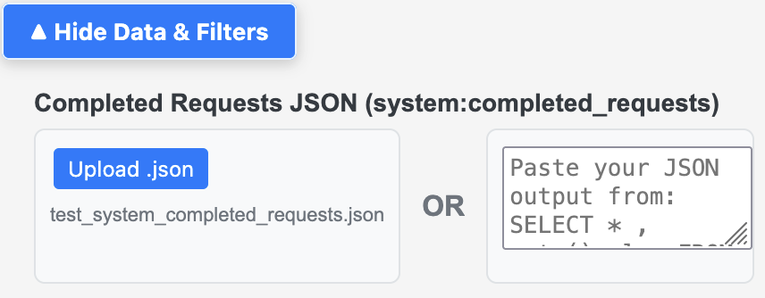
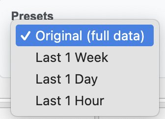
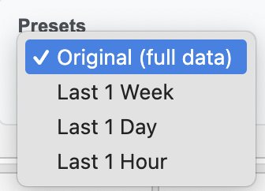
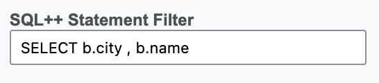
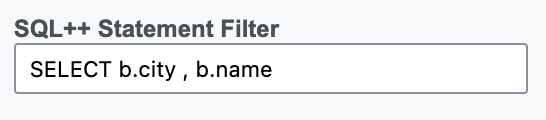
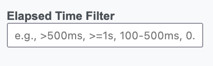
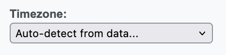

How to Process and Generate Charts/Stats
Run this in Query Workbench, Capella Query tab, or cbq, then export as JSON.
SELECT *, meta().plan FROM system:completed_requests ORDER BY requestId LIMIT 2000;
Tip: For larger datasets, prefer targeted filters before exporting.
Open Analyzer — in the upper-left input, paste or upload your JSON and it will auto-parse, or click Parse JSON.
Private & secure: Runs and processes your data entirely in your browser and its memory. No server uploads.
After parsing, use filters to focus analysis:
-
Date/Time Range — From/To with quick presets (Original | 1 Week | 1 Day | 1 Hour)

 

-
SQL++ Statement Contains — text filter for keywords/patterns
PRO – a great way to focus only on one query pattern and reduce the noise from other queries
 

-
Elapsed Time Filter — comparisons and ranges (e.g.,
>=500ms,0.5s-2s) Elapsed Filter Examples
Elapsed Filter ExamplesFilter by the
elapsedTimeof each query using comparisons and ranges. Supported:<,<=,=,>,>=, ranges like100-500msor0.5s-2s, unit-inferred ranges like3-15s, shorthand500ms+(means>= 500ms), and bare numbers (e.g.,150means>= 150ms).- Comparators:
>500ms,>=1s,<2s,=150ms - Ranges (inclusive):
100-500ms,0.5s-2s,3-15s(unit applied to both sides) - Shorthand:
500ms+(same as>=500ms) - Bare number:
150is interpreted as>=150ms
- Comparators:
-
Timezone Picker — Adjust the charts/graphs x-axis time to display in your chosen timezone. Select from the dropdown to convert all timestamps accordingly.

- Exclude System Queries — hides system:*, INFER/ADVISE, CREATE/ALTER INDEX, etc.


Run this separate query for system:indexes and paste/upload to the upper-right input to enrich Indexes and Flow views.
SELECT
s.name,
s.id,
s.metadata,
s.state,
s.num_replica,
s.`using` AS indexType,
CONCAT("CREATE INDEX ", s.name, " ON ", k, ks, p, w, ";") AS indexString
FROM system:indexes AS s
LET bid = CONCAT("", s.bucket_id, ""),
sid = CONCAT("", s.scope_id, ""),
kid = CONCAT("", s.keyspace_id, ""),
k = NVL2(bid, CONCAT2(".", bid, sid, kid), kid),
ks = CASE WHEN s.is_primary THEN "" ELSE "(" || CONCAT2(",", s.index_key) || ")" END,
w = CASE WHEN s.condition IS NOT NULL THEN " WHERE " || REPLACE(s.condition, '"', "'") ELSE "" END,
p = CASE WHEN s.`partition` IS NOT NULL THEN " PARTITION BY " || s.`partition` ELSE "" END;